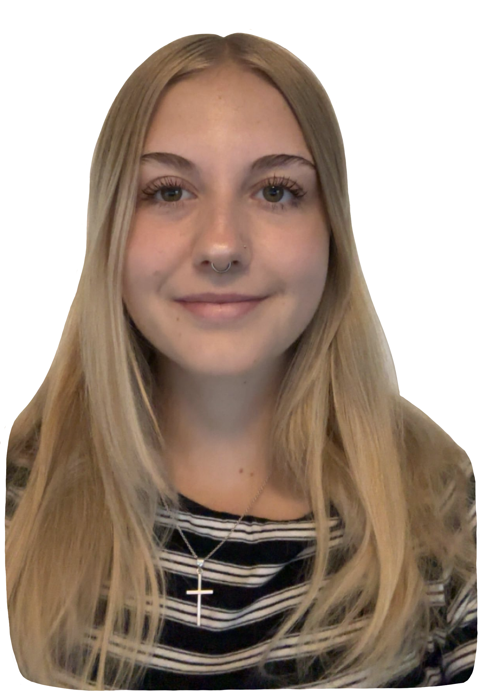

Freja Køel Rossen
All about me
Hello! My name is Freja Køel Rossen. I am 21 years old and have recently started studying at Erhvervsakademi København. I am currently on the 1st semester of It-architecture. Before starting, I had 2 gap years where I used my time working and traveling. In my free time I like to use my creativity, listen to music and socialize with friends. Besides studying, I also work at Cafe & Restaurant Portalen as a waitress/bartender. In this portfolio you will get to know a little bit about me and who I am.

Past Educations
In have studied in various schools around the world. I have studied at:
- ISC - International School of Curitiba
- MKIS - Mont'Kiara International School
- Skt. Josefs Skole
- Nyborg Gymnasium
This school was in Curitiba, Brazil and I was in Kindergarden to 1st grade here. They used the IB system but most of the time here, I just learned how to read, write and understand english. Since I was so young, I also easily took up Portuguese but sadly have forgotten it over the years since I stopped practicing it. One of the best memories I have at this school was International day where all students had a stand and got to make a food that represents their country - my family and I made havregrynskugler!
This school was in Kuala Lumpur, Malaysia and I was in 2nd and 3rd grade here. This is the place where I won multiple swimming contests and one of my best memories is
This school was in Roskilde, Denmark and I was in 4th grade till 11th grade here. They used the British IGCSE system. This is the school I spent the majority of time at and have most memories at. I have loughs of amazing memories from this school and have made life-long friends from here as well.
This was my gymnasium in Nyborg, Denmark. I took an IB - International Baccalaureate and I lived at the boarding school for 2 years. . Living at a boarding school was quite special, I made loughs of friends and have an amazing friend group from there and you got to spend every minute of everyday with them during my time there. Eating breakfast, lunch and dinner together every day was quite a bonding moment.
Work Experience
In the past I have worked at a few different jobs. I started at Jensens Bøfhus in Waves, Hundige as a waitress and eventually became a chefværtinde with more responsibility. I had to open/close the restaurant, train new employees, manage day-to-day operations and was responsible for cash reconciliation and accounting. I also received a food hygiene course while working there.
Then I moved to Warsaw and worked at a company called Concentrix where one of their clients was Allente - a TV and streaming company. Here I helped people if their TV or streaming app was not working, if there was a mistake in their invoice or if they just had any questions. This job required patience, understanding and good communication - since it's over the phone it was important to be able to explain things to the customers in a detailed and understandable way.
Currently, I am working at Cafe & Restaurant Portalen as a waitress/bartender. There are different type of events at Portalen like concerts, talk shows or comedy shows and there is always a good and high energy. At the moment, I am being trained to become responsible for specific areas and learning how to close up the place. This is super exciting and I learn something new and get into a routine every time i'm there.
These different jobs have taught me about communication and customer service, organization and time management and how to stay calm under pressure. These are valuable skills that I can take with me for the future.
Growing up
Growing up I have lived in multiple countries which is a big part of who I am today. Growing up I lived in Norway, Brazil and Malaysia and later on Poland by myself. I lived in Brazil for 2 years with my family. We lived in a city called Curitiba and I went to International School of Curitiba. The people in Brazil are amazingly open and welcoming. Everyone, no matter who you are, are always welcome. We also enjoyed many trips in the nature seeing waterfalls and the rainforest and much more beautiful nature. They have nature that we don't see in Denmark.
After Brazil, my family and I moved to Malaysia and lived there for almost 2 years. I continued in an international school but now there was a new country and culture to learn about. In Malaysia we lived in a resort called Tropicana, close to Kuala Lumpur, and they had the most insane houses. Our house was considered one of the smaller ones in the area, yet it had 3 bedrooms, 6 toilets and 2 kitchens. Compared to the aparment we came from in Brazil or our old house in Denmark - this house was huge. The place also had a golf course, a massive swimming pool and multiple restaurants. I was quite fond of the swimming pool and started swimming classes - even won a few competitions I might add.
Lastly, I moved to Warsaw, Poland in 2025 and lived there for 6 months. This was the first country I moved to by myself. I got the opportunity to work at a company called Concentrix where I had to move to Warsaw and immediately took it. I wanted to try something new and maybe a little different in my gap year and then I got the chance to do it. I had to find my way around Warsaw myself, find an apartment and for the first time in my life move out from home. Suddenly I was independent and had to pay rent, go to work for 40 hours a week, plan a budget for the month and make shopping lists for the week. This experience taught me a lot and Warsaw is a great city with loughs of things to see. The christmas markets during the winter are really something!
Living in these multiple countries is a part of who I am because I have seen and learned about different cultures. This has made me more open-minded and interested in different people and their cultures. Today, I love to educate myself about different cultures from different countries and learn what they might have that is different from where I came from. In all of these countries I also went to international schools in which when I moved back to Denmark I continued in an international route. I continued at an international school in Roskilde and continued to be around people from all over the world. I then decided I also wanted to continue at an International Gymnasium so this education is actually the first time i'm being taught in Danish although of course there is english included since it's inside the IT world.
I loved living abroad in my childhood and I would never want to change anything about that.